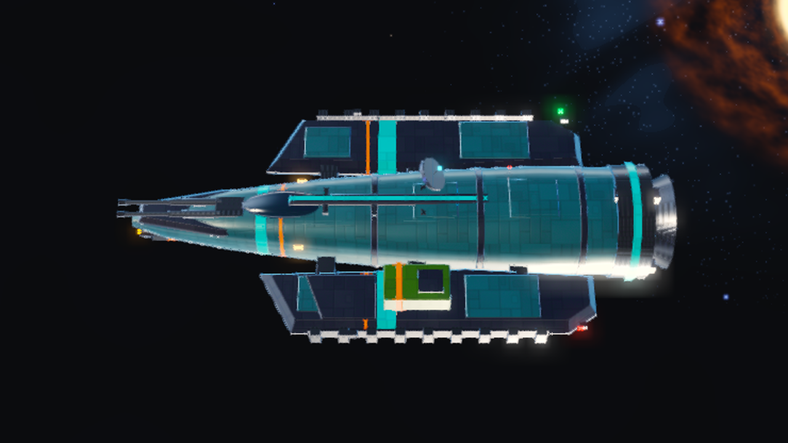
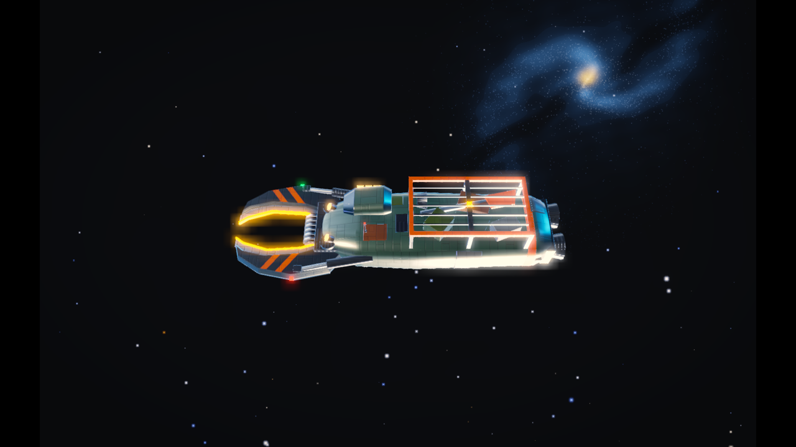
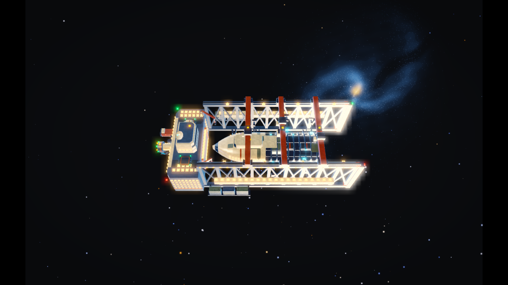
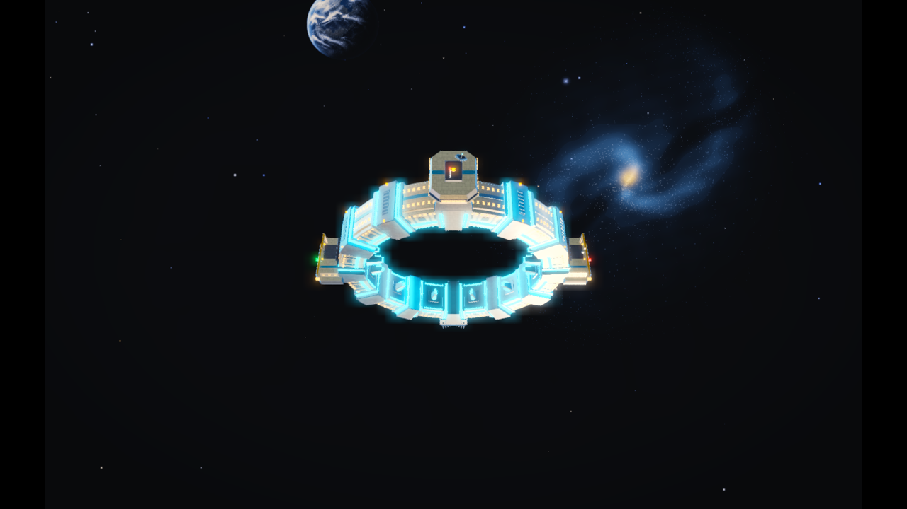

ANI-01 Scanner dish deploy, aim, pulse and park
Attached scanner pedestal lift and dish aim/park; fixed host hull and roof rail.
Review notes & phase landmarks
- V1 rejected for lifting the roof rail; v2 targets the actual small dish assembly.
- Use the real Dish/DishPedestal dimensions and rigid geometry; the generated reflector/specular detail is not replacement mesh authority.
- frame 1 — rest (t=0.00s)
- frame 25 — deploy (t=1.00s)
- frame 61 — aim (t=2.50s)
- frame 97 — retract (t=4.00s)
- frame 132 — park (t=5.46s)
- frame 145 — final (t=6.00s)
Source & build locators
Model: kestrel · Builder: tools/blender/forge/ships/kestrel.py
Release GLB: assets/ships/release/parts/wholeships/kestrel.glb
GLB SHA-256: 51a8fa86d80ccf75dbcb7ce6c1c9190072cbd177b682c32eaeef1579e378b9db
Source parts (prefix families): DishPedestal Dish DishHorn DishFeed HOOK_SENSOR_DISH
Proposed geometry: A short rigid telescoping inner stem within the existing dish pedestal; original dish dimensions and host geometry remain authoritative.
Pinned input: models/kestrel.png
Video SHA-256: 0144251f9c5846ab6e22267a5af51a9bef3de3e0e07627d42102b9268a2fd6a4 · v2 · 1280×720 @ 24fps · 145 frames
ANI-02 Starter mining head deploy and bite
Focused actual bow/chin orange cutter carrier extension and stow, with guns and nose held fixed.
Review notes & phase landmarks
- Reference is a mechanism close-up with whole-model context, not a whole-hull animation.
- Keep the real source cutter diameter and bound its travel to the validated emitter/guide; the video is not permission to grow a new cannon or increase mining range.
- frame 1 — rest (t=0.00s)
- frame 18 — extension (t=0.71s)
- frame 45 — work-pose (t=1.83s)
- frame 71 — withdraw (t=2.92s)
- frame 97 — park (t=4.00s)
Source & build locators
Model: kestrel · Builder: tools/blender/forge/ships/kestrel.py
Release GLB: assets/ships/release/parts/wholeships/kestrel.glb
GLB SHA-256: 51a8fa86d80ccf75dbcb7ce6c1c9190072cbd177b682c32eaeef1579e378b9db
Source parts (prefix families): MiningClamp MiningCutter SOCKET_Mining_Front
Pinned input: models/kestrel-mining-detail.png
Video SHA-256: 62ce38d1a3931d36c584c1d412b8ed6381baddff5a95ba34bfb0c41f5e14dbcf · v2 · 1280×720 @ 24fps · 97 frames
Host context image:

ANI-03 Massline winch payout, catch, loaded reel and release
Yard-tug tow-hardware catch/reel/release and illustrative line payout, with recognizable fixed host.
Review notes & phase landmarks
- The rope is the existing simulation/VFX tether, not a second Blender-animated rope.
- Match the actual WinchDrum axis, wrap count and fairlead from the source; omit incidental non-winch deck-plate twitch from the generator.
- frame 1 — rest (t=0.00s)
- frame 27 — payout (t=1.08s)
- frame 80 — loaded-reel (t=3.29s)
- frame 119 — release (t=4.92s)
- frame 145 — park (t=6.00s)
Source & build locators
Model: yard_tug · Builder: tools/blender/forge/ships/yard_tug.py
Release GLB: assets/ships/release/parts/wholeships/yard_tug.glb
GLB SHA-256: bf357a1e0051c18364e44850ea690e632b28ad5fb95c9824a969777482b352c0
Source parts (prefix families): WinchDrum WinchCable WinchFlange WinchCheek Fairlead FairleadRoll TowHook SOCKET_Tether_Massline
Pinned input: models/yard_tug.png
Video SHA-256: 69f2f04a88da86b3c2c560ed5935d882e88244d7e8585b92880a8c7858ea89fa · v1 · 1280×720 @ 24fps · 145 frames
ANI-05 Boost drive iris and actuator lock
Compact segmented drive-iris/rotor ignition cycle inside the actual aft blue exhaust circle.
Review notes & phase landmarks
- Focused rear inspection view fixes the v1's wrong roof-mounted fan. The existing nozzle diameter and surrounding collar stay fixed.
- Small inner segmented hardware is explicitly proposed geometry; choose a fixed documented petal count and rigid linkage, not incidental AI blade/detail drift.
- Parent bell gimbal and core emissive pulse keep their current owners; only the new inner hardware belongs in the motion bank.
- frame 1 — rest (t=0.00s)
- frame 18 — ignition (t=0.71s)
- frame 49 — powered-pose (t=2.00s)
- frame 80 — closing (t=3.29s)
- frame 97 — park (t=4.00s)
Source & build locators
Model: kestrel · Builder: tools/blender/forge/ships/kestrel.py
Release GLB: assets/ships/release/parts/wholeships/kestrel.glb
GLB SHA-256: 51a8fa86d80ccf75dbcb7ce6c1c9190072cbd177b682c32eaeef1579e378b9db
Source parts (prefix families): DriveBell DriveCollar DriveRing DriveClamp HOOK_DRIVE_CORE
Proposed geometry: A small rigid segmented iris/rotor inside the existing aft DriveBell opening; fixed nozzle diameter and unchanged pressure hull/drum at rest.
Pinned input: models/kestrel-drive-detail.png
Video SHA-256: 941d135bcb1b8424e22ea275ffa5a2cca9d165ac5f2d0eb54b195829765993bf · v2 · 1280×720 @ 24fps · 97 frames
Host context image:
ANI-06 Repair pod hatch and service-arm weld
Fixed green repair-pod hatch with a compact attached two-link arm deploy/stow cycle.
Review notes & phase landmarks
- The focused image now selects the actual pod hatch, not the central roof.
- Arm and internal mount are proposed geometry; the green body and band remain fixed and source geometry is authoritative.
- frame 1 — rest (t=0.00s)
- frame 27 — hatch-arm-deploy (t=1.08s)
- frame 49 — service-pose (t=2.00s)
- frame 80 — stow (t=3.29s)
- frame 97 — park (t=4.00s)
Source & build locators
Model: kestrel · Builder: tools/blender/forge/ships/kestrel.py
Release GLB: assets/ships/release/parts/wholeships/kestrel.glb
GLB SHA-256: 51a8fa86d80ccf75dbcb7ce6c1c9190072cbd177b682c32eaeef1579e378b9db
Source parts (prefix families): RepairPod RepairPodBand RepairPodHatch HOOK_SECONDARY_POD SOCKET_Utility_Dorsal
Proposed geometry: A compact two-joint service arm stowed inside the existing fixed green repair pod, with a small tool head.
Pinned input: models/kestrel-repair-detail.png
Video SHA-256: 749aa37f88ae9633734c194b07a610ceca7738155d5bd65fc66768833bf072bc · v2 · 1280×720 @ 24fps · 97 frames
Host context image:
ANI-07 Directional armour hinge, peel and loose-plate settle
Single thin original port shoulder cap lifting about its attachment and settling into a small damaged gap.
Review notes & phase landmarks
- Focused dark-panel view fixes the duplicated-box v1. Use the actual four-sided cap outline and thickness.
- The generated visual gap is not a physics actor handoff: any detached part must still be a real once-spawned debris body.
- frame 1 — undamaged (t=0.00s)
- frame 18 — lift (t=0.71s)
- frame 49 — loose-plate-pose (t=2.00s)
- frame 97 — damaged-hold (t=4.00s)
Source & build locators
Model: kestrel · Builder: tools/blender/forge/ships/kestrel.py
Release GLB: assets/ships/release/parts/wholeships/kestrel.glb
GLB SHA-256: 51a8fa86d80ccf75dbcb7ce6c1c9190072cbd177b682c32eaeef1579e378b9db
Source parts (prefix families): ShoulderCap HOOK_ARMOR_PORT Sponson Brace
Pinned input: models/kestrel-armour-detail.png
Video SHA-256: 9d2ccb4274367d28f864135e2419a14612bd9cf016622ee53f45b1113621dee7 · v2 · 1280×720 @ 24fps · 97 frames
Host context image:
ANI-08 Wasp seam rupture and rigid debris handoff
Readable Wasp-specific hull/wing/nacelle-cover rupture into substantial recognizable rigid pieces.
Review notes & phase landmarks
- The movie illustrates fracture choreography and fragment identity, not an actor-motion clip to bake.
- Retained central chassis is dead wreck mass, not a second live/intact Wasp; conserve mass and do not duplicate nacelles when authoring the fragment set.
- The runtime owns all fragment separation, translation and spin from the immediate physical handoff.
- frame 1 — intact (t=0.00s)
- frame 14 — rupture (t=0.54s)
- frame 40 — peel (t=1.63s)
- frame 80 — separated-pieces (t=3.29s)
- frame 145 — wreck-hold (t=6.00s)
Source & build locators
Model: wasp_production_v1 · Builder: tools/blender/forge/ships/wasp.py
Release GLB: assets/ships/release/parts/wholeships/wasp_production_v1.glb
GLB SHA-256: a1f5238984a250372330650a692279e8d1d2ac9263cdf69d1a9139b1aa55f602
Source parts (prefix families): Fuselage Chine WingRoot Nacelle TailFin HOOK_SECONDARY_FIN HOOK_ARMOR_FLAP
Proposed geometry: Wasp-specific substantial rupture fragments derived from its actual source; simulation owns actor trajectories and mass conservation.
Pinned input: models/wasp_production_v1.png
Video SHA-256: 5eff0f85821662ad5690623f01c13df9666ceaac160225845c67b9404ee663f4 · v1 · 1280×720 @ 24fps · 145 frames
ANI-09 Salvage-cutter hydraulic jaw bite and release
Paired existing salvage jaws hinge while the patched hull, cab and scrap cage keep their shape and scale.
Review notes & phase landmarks
- Tighter model input and context correct the v1's overall drift/cage movement.
- Match original jaw lengths, blade outline and both hydraulic endpoints; no stretching or duplicate jaw parts.
- frame 1 — rest (t=0.00s)
- frame 18 — jaw-opening (t=0.71s)
- frame 49 — pressure-pose (t=2.00s)
- frame 80 — release (t=3.29s)
- frame 97 — park (t=4.00s)
Source & build locators
Model: salvage_cutter · Builder: tools/blender/forge/ships/salvage_cutter.py
Release GLB: assets/ships/release/parts/wholeships/salvage_cutter.glb
GLB SHA-256: 46ef26425fffb0de49a9b96cd620ed379f4557f834f8c07314101f2641aceb6d
Source parts (prefix families): JawPivot Jaw Blade CutterEdge JawRam JawRamRod JawRamLug Shredder
Pinned input: models/salvage-cutter-jaw-detail.png
Video SHA-256: 0e84ac5962fb9e24ff01f1f6a1778cb7398e77a51826247685745300e4eca957 · v2 · 1280×720 @ 24fps · 97 frames
Host context image:

ANI-10 Mining-drone cutter engage, grind and coast-down
Rigid original mining-drone cutter/drum operation with unchanged body, pods and palette.
Review notes & phase landmarks
- Keep all source teeth/spike parts in the same rotor and its real gearbox axis.
- The subtle cutter read in the whole-model reference needs a clear shipping-camera working-state demonstration; it is not permission to deliver an imperceptible animation.
- frame 1 — rest (t=0.00s)
- frame 27 — engage (t=1.08s)
- frame 66 — grind (t=2.71s)
- frame 119 — coast-down (t=4.92s)
- frame 145 — park (t=6.00s)
Source & build locators
Model: place_mining_drone · Builder: tools/blender/forge/ships/place_mining_drone.py
Release GLB: assets/ships/release/parts/places/place_mining_drone.glb
GLB SHA-256: 2b64b357621af5dd78681a095682cd41b3ac92cd3cf63ac887840b79f751c3cf
Source parts (prefix families): Gearbox Drum DrumLip CutFace Tooth Cutter Spike LampYoke
Pinned input: models/place_mining_drone.png
Video SHA-256: 07b4a215678066e645734d2efb05f4bf743107d6f746f1edefcb2a2e80ccad4c · v1 · 1280×720 @ 24fps · 145 frames
ANI-11 Cargo-pod lock bars, door breach and spill opening
Cargo-pod lock release, paired outer door opening and short inner fold-down retainer release into an open hold.
Review notes & phase landmarks
- This concept deliberately adds a real interior, two outer leaves and two inner retaining panels; the ribs, frame, warning bands and roof lug stay recognizable.
- Do not claim four generated opening surfaces already exist in the source model.
- A persistent opened shell must be a real empty physical successor/wreck, not an unmanipulable visual ghost; actual inventory spill stays exactly once.
- frame 1 — sealed (t=0.00s)
- frame 27 — outer-door-release (t=1.08s)
- frame 66 — inner-retainer-release (t=2.71s)
- frame 106 — open (t=4.38s)
- frame 145 — open-hold (t=6.00s)
Source & build locators
Model: place_cargo_pod_standard · Builder: tools/blender/forge/ships/place_cargo_pod_standard.py
Release GLB: assets/ships/release/parts/places/place_cargo_pod_standard.glb
GLB SHA-256: c350ab31ff72098ebbb2a04d8f3f720dc20cf04842538d0c62675849558dd62f
Source parts (prefix families): Door LockBar EndRail Post Body Lug SOCKET_Clamp_Dorsal
Proposed geometry: Two outer hinged door leaves, two short inner fold-down retainer panels, and a shallow real interior; source ribs, frame and roof lug remain unchanged.
Pinned input: models/place_cargo_pod_standard.png
Video SHA-256: ae3bd8ba531c84e8a00f67f529835fc8c4578caaaa3822c4df6f989b24e59d3e · v1 · 1280×720 @ 24fps · 145 frames
ANI-13 Fab-yard two-link welding-arm seam pass
Linked-joint fabrication welder approach, seam work and park on the unchanged yard architecture.
Review notes & phase landmarks
- Use the actual source ArmBase/ArmA/ArmB/ArmJoint/ArmHead geometry and mounting, not a new unconnected white beam.
- The high working pose in the video is a visual demonstration; the real tool endpoint must remain on its declared hull seam and avoid wall/cockpit penetration.
- frame 1 — park (t=0.00s)
- frame 27 — reach (t=1.08s)
- frame 66 — seam-work (t=2.71s)
- frame 106 — return (t=4.38s)
- frame 145 — park (t=6.00s)
Source & build locators
Model: place_station_fab · Builder: tools/blender/forge/ships/place_station_fab.py
Release GLB: assets/ships/release/parts/places/place_station_fab.glb
GLB SHA-256: ac316c76ee7b74aae58cbfeab9a75dec38f7276bf3bf7ced3a9cd93b5a4b43bd
Source parts (prefix families): ArmBase ArmA ArmB ArmJoint ArmHead
Pinned input: models/place_station_fab.png
Video SHA-256: d7497c963330776de7dd6794c9523cc75de4ed9c84fee5dec1de9d22cd7187fa · v1 · 1280×720 @ 24fps · 145 frames
ANI-14 Fab-yard crane plate lift, traverse and fit
One crane-0 trolley and connected hull-plate hoist stroke above the exposed stern ribs; fixed bridge beams.
Review notes & phase landmarks
- The corrected view identifies the rightmost orange bridge in this camera and keeps the other cranes/architecture fixed.
- Use actual paired Hoist0 links and HangingPlate; do not reproduce the rejected v1's growing gantry masts.
- frame 1 — rest (t=0.00s)
- frame 18 — trolley-hoist (t=0.71s)
- frame 49 — fit-pose (t=2.00s)
- frame 80 — return (t=3.29s)
- frame 97 — park (t=4.00s)
Source & build locators
Model: place_station_fab · Builder: tools/blender/forge/ships/place_station_fab.py
Release GLB: assets/ships/release/parts/places/place_station_fab.glb
GLB SHA-256: ac316c76ee7b74aae58cbfeab9a75dec38f7276bf3bf7ced3a9cd93b5a4b43bd
Source parts (prefix families): Crane0 CraneTrolley0 CraneCab0 CraneEnd0 Hoist0 HangingPlate
Pinned input: models/station-fab-crane-detail.png
Video SHA-256: 6a1990772f7ecaa3e07dc732e24c198cb9e0dff8f78759e1ca261260d4501430 · v2 · 1280×720 @ 24fps · 97 frames
Host context image:

ANI-15 Jump-gate emitter index, lock and reset
Small inner emitter indexing on the actual segmented ivory gate, with fixed tower/platforms and open aperture.
Review notes & phase landmarks
- Actual source-root yaw 90 exposes the real gate; place-view camera heading did not. V1's unrelated eight-spoke replacement is rejected.
- Keep the real source emitter count/lengths and aperture clearance; omit minor generated rod-detail drift.
- frame 1 — idle (t=0.00s)
- frame 18 — index (t=0.71s)
- frame 49 — locked (t=2.00s)
- frame 80 — release (t=3.29s)
- frame 97 — idle (t=4.00s)
Source & build locators
Model: place_gate_jump_ring · Builder: tools/blender/forge/ships/place_gate_jump_ring.py
Release GLB: assets/ships/release/parts/places/place_gate_jump_ring.glb
GLB SHA-256: 39d8ca0c6342ffb4e244c7d072d7a6d638e1c1da8cb1257383957fc54aae0f2f
Source parts (prefix families): Emitter EmitterBase Coil ApertureRim Seg SOCKET_Gate_Aperture
Pinned input: models/gate-emitter-detail.png
Video SHA-256: 39006579ec6cd5512f82137a90ad2e0eb85efcc2e053250fb10959ca0e21e640 · v2 · 1280×720 @ 24fps · 97 frames
Host context image:
